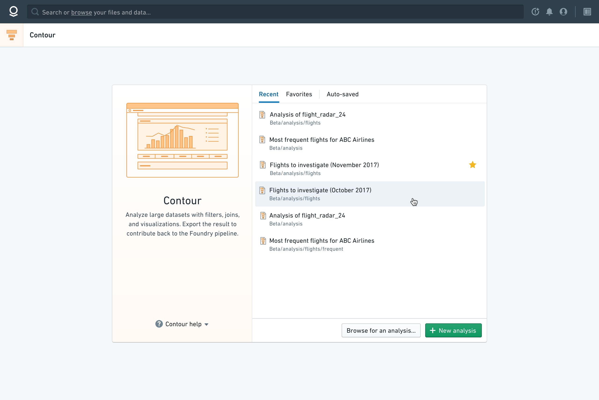
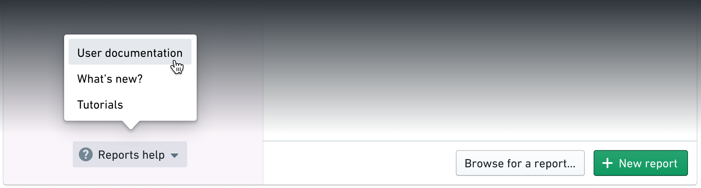

Initial state
To help users orient themselves when they first land in an app, we made the zero state the same across all applications. This way relevant information could always be found in the same place.


Tabs
The new tab menu makes it easy for uses to return to recent workflows or rediscover forgotten files.
Resources
The persistent Help button elevates relevant documentation that each client can configure to suit their own needs.

Visual consistency and illustrations
To ensure that applications would be clearly identifiable within the new default state, I designed a color scheme and brand illustration for each app.